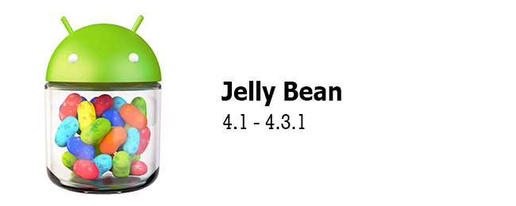

Android 4.0 Ice Cream Sandwich
El 18 de octubre de 2011 se lanzaba Android 4.0 Ice Cream Sandwich, probablemente el mayor cambio hasta la fecha. Varias de las novedades "para tablets" de Honeycomb se retomaban y hacían compatibles con teléfonos. El sistema adoptaba el look Holo que dominará la plataforma hasta que llegue Material Design.
La barra de sistema de Honeycomb se convertía en la barra de navegación en pantalla, y el soporte para NFC que llegó en Gingerbread se usaba para la transferencia de datos con Android Beam.
Llegaban muchas opciones de personalización, con las carpetas en el escritorio y el selector de widgets separados en otra pestaña. Llega la tipografía Roboto, diseñada para ser legible en la variedad de tamaños de pantalla en los que se usa Android.
Android Ice Cream Sandwich será el primero que integre el sistema de captura de pantalla nativa con la combinación Volumen- y Encendido. También será el que nos traiga por primera vez las estadísticas de uso de datos totales y por aplicación, diferenciando entre transferencias en primer y segundo plano.
Como curiosidad, Ice Cream Sandwich incluye el desbloqueo facial Face Unlock, oficialmente seis años antes que Face ID. No es igual de complejo, por supuesto. Y, ya que hablamos de la pantalla de bloqueo, es ahora posible lanzar aplicaciones directamente desde ella.
Android 4.1 Jelly Bean

La nomenclatura de versiones empieza a complicarse con Jelly Bean, el Android que va desde la versión 4.1 hasta 4.3.1. Fue lanzado el 9 de julio de 2012. Es el nacimiento de Google Now y gracias al Project Butter se logra un movimiento más suave y sin lag de la interfaz.
Jelly Bean acapara tres versiones de la API para desarrolladores (16, 17 y 18) y, aunque no tiene muchos cambios importantes, sí modifica prácticamente todos los componentes de Android para mejorar su funcionamiento y rendimiento. Por ejemplo, las notificaciones no solo podían descartarse individualmente, sino que ahora podían incluir acciones. También llegaban los Ajustes rápidos al panel de notificaciones.
Jelly Bean incluye varias mejoras de accesibilidad, como el toque triple para usar la lupa, el deslizamiento y zoom con dos dedos o el modo hablado y la navegación por gestos para usuarios con problemas de visión.
En esta versión de Android era posible añadir widgets a la pantalla de bloqueo, pero no le cojas mucho cariño a la función pues desaparecería dos años más tarde. Cambiaba también la interfaz de la aplicación de cámara.
Con la tercera revisión de Jelly Bean, la versión 4.3 de julio de 2013 recibíamos el soporte nativo para emoji, el adelantado-a-su-época soporte para resolución 4K, el soporte para OpenGL ES 3.0 y mejor rendimiento del almacenamiento al cargar el comando fstrim cuando el dispositivo no se está usando.
Android 4.4 KitKat
Android KitKat es una de las versiones de Android más emblemáticas, y no solo por lo pegadizo de su nombre (la primera vez que Google se aliaba con otra empresa para su mascota de Android). Hasta hace no mucho, seguía siendo una de las versiones más usadas, e incluso hoy en día, cuatro años más tarde, mantiene una honorable cuota del 13,4% en la distribución de versiones.
En KitKat se hacía un necesario refresco a la interfaz, eliminando cualquier resto de la estética "a lo Tron" de versiones anteriores. Desaparecían los acentos de color en azul para cambiarse por iconos más claros. Llegaban también las transparencias: en el panel de notificaciones, en la barra de navegación y en Google Now, que ahora se desplegaba sobre tu escritorio.
El modo inmersivo llegaba también con KitKat: la barra de estado y la barra de navegación se ocultaban para dejarle todo el protagonismo a la aplicación. Uno que nunca desaparecería es el menú para mostrar los menús que no caben en la barra de acción (el botón de tres puntos en vertical): se mostrará siempre porque Android 4.0 determina obsoleto el botón físico de menú.
KitKat incluye el nuevo Android Runtime (ART) para reemplazar a la máquina virtual de Dalvik de modo experimental, pero su uso está deshabilitado de fábrica. La API de accesibilidad sigue creciendo y se modifica el aspecto de varias aplicaciones como el Reloj, Teléfono y Descargas.
Android KitKat recibirá las actualizaciones 4.4.1 y 4.4.2 en diciembre de 2013, con cambios menores y mejor compatibilidad. En Junio llegarían otras dos actualizaciones, 4.4.3 y 4.4.4, con correcciones de errores y mejoras de seguridad.